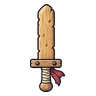
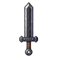
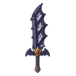
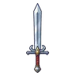
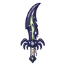
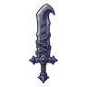
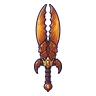
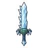
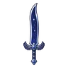
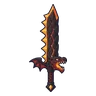

ดาบใหญ่ดาบใหญ่ทั้งหมด 41 ชิ้น เรียงตามเลเวลชื่อLvATKธาตุได้จากดาบใหญ่ผู้พิทักษ์185ไม่มีธาตุอาวุธเริ่มต้นของสาย (ได้ตอนเปลี่ยนอาชีพ)ดาบใหญ่ไม้ฝึก154ไม่มีธาตุ—ดาบแครอทยักษ์862ดินแครอทจอมพุ่ง 0.12%ดาบใหญ่เหล็กดำ1070ไม่มีธาตุ—ดาบใหญ่ใบไม้ลม1262ลมสไลม์ใบไม้ 0.06%ดาบใหญ่เขี้ยวค้างคาว1465มืดค้างคาวรัตติกาล 0.12%ดาบใหญ่ใบกว้าง1878ไม่มีธาตุหมูป่าเขี้ยวตัน ร่างเขาเงิน 0.25%ดาบใหญ่น้ำใส2062น้ำกบบึงใส 0.06%ดาบใหญ่ราชาค้างคาว2281มืดราตรีราชาค้างคาว 0.5%ดาบใหญ่เหล็กกล้า26110ไม่มีธาตุ—ดาบใหญ่หนามตอไม้28101ดินตอไม้ผี 0.12%ดาบใหญ่เขี้ยวแมงมุม3295พิษแมงมุมถ้ำ 0.06%ดาบใหญ่กระดูกทหาร34117ไม่มีธาตุโครงกระดูกทหาร 0.25%ดาบใหญ่ถ่านแดง3697ไฟจิ้งจอกถ่านแดง 0.06%ดาบใหญ่ผีดูดเลือด40101วิญญาณป้ายหลุมศพผีสิง 0.12%ดาบใหญ่ฟ้าร้อง4296ลมแกะเมฆเขาม้วน 0.06%ดาบใหญ่ขนอินทรี4494ลมอินทรีพายุ 0.12%ดาบใหญ่นักล่ายักษ์4699ไม่มีธาตุ—ดาบใหญ่ถ่านคุรากดำ47109ไฟบอสผู้ถูกรากสิงดาบใหญ่นางพญามด50126ดินรังนางพญามด 0.5%ดาบใหญ่ราชาเห็ด50126พิษราชาเห็ดเรืองแสง 0.5%ดาบใหญ่จันทรา52150ไม่มีธาตุ—ดาบใหญ่ราชาสุสาน55173มืดบัลลังก์ราชาสุสาน 0.5%ดาบใหญ่ผู้ล่าผี55138ศักดิ์สิทธิ์อัศวินกระดูก 0.12%ดาบใหญ่ดอกไม้กินคน58138พิษดอกไม้กินคน 0.12%ดาบใหญ่หินแดง60155ดินโกเลมหินแดง 0.25%ดาบใหญ่แสงเทียน60132ศักดิ์สิทธิ์วิญญาณเทียน 0.06%ดาบใหญ่เลือดเดือด64140ไม่มีธาตุหมาป่าเงาจันทร์ 0.12%ดาบใหญ่คำสาปจันทร์ดับ70171มืดภูตหมอกเงา 0.12%ดาบใหญ่ธารน้ำแข็ง72133น้ำกัปปะหนองหมอก 0.06%ดาบใหญ่ลาวา74133ไฟโกเลมลาวา 0.06%ดาบใหญ่ดาวตก76190ไม่มีธาตุ—ดาบใหญ่หางแร็พเตอร์78167ลมแร็พเตอร์ใบไม้ 0.06%ดาบใหญ่เขาด้วงแรด80175ไม่มีธาตุด้วงแรดยักษ์ 0.12%ดาบใหญ่ไม้โบราณ82186ดินต้นไม้ยักษ์โบราณ 0.25%ดาบใหญ่หินภูเขาไฟ84195ไฟหนอนลาวา 0.25%ดาบใหญ่เปลวอิมป์86168ไฟอิมป์เปลวไฟ 0.06%ดาบใหญ่ราตรีนิรันดร์88179มืดนกกระสาเงา 0.12%ดาบใหญ่พายุดาวตก90167ไม่มีธาตุดรอปทั่วโลก Lv 90+ดาบใหญ่มังกรลาวา92218ไฟหัวใจมังกรลาวา 0.5%ดาบใหญ่ตะวันเที่ยงคืน95246ศักดิ์สิทธิ์—